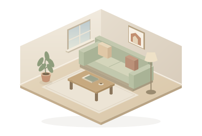

Diagnòstic 1.1.5
Aquesta pàgina no inicia sessió ni envia ordres o dades fora del panell.
D0 · L’script de diagnòstic encara no s’ha executat.
Prova visual SVG (ha d’aparèixer el menjador):

Aquesta pàgina no inicia sessió ni envia ordres o dades fora del panell.
D0 · L’script de diagnòstic encara no s’ha executat.
Prova visual SVG (ha d’aparèixer el menjador):
